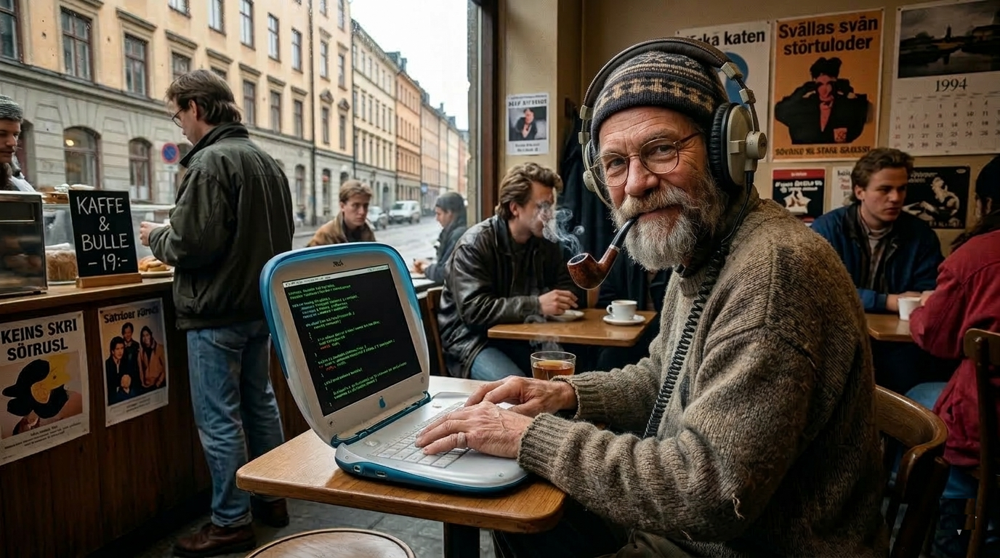

Zero AI!
In an age where AI writes code in seconds, we believe in a slower, more expensive, objectively worse approach. Like vinyl records, but for software.

Every closure handcrafted from locally sourced logic. No AI, no autocomplete, no spelcheck. Just a man with an iBook G3, headphones, and unreasonable amounts of coffee.
I will look at your AI-generated codebase, sigh heavily, and then offer advice you could have gotten from ChatGPT for free.
Your code from 2025 is Slop!
I will lovingly refactor it by hand, introducing exciting new bugs that no AI would ever think of.
Hourly rate starting as low as
$1,000
An AI would plan, execute, test, and deploy in minutes. I prefer the human way: three meetings, a whiteboard session, two existential crises, and a deploy that breaks staging.
AI-generated code is the IKEA furniture of software — cheap, fast, and it works. We reject that. Our code is the hand-carved oak cabinet that takes six months and doesn't quite close properly.
When an AI writes a bug, it's a "hallucination." When I write a bug, it's a deeply personal creative expression. You can't automate that kind of character.
You work directly with me. I don't scale. I can't process ten repos in parallel. I need lunch breaks and sometimes I just stare out the window. This is the premium experience.
Have a project that an AI could finish before you're done reading this sentence? Let me do it instead. It'll take longer and cost more, but you'll feel something. Probably regret.
hello@artisancode.se